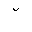
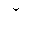
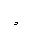
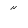
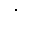
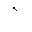
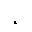
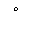
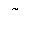

Overview
Sets of names
Previous: isocyr2
Next: isolat1
Entity Declarations
XSLT 2 character map
| Name | Unicode | Glyph | Unicode Name | Description | Aliases |
|---|---|---|---|---|---|
| acute | U+00B4 | ACUTE ACCENT | =acute accent | DiacriticalAcute | |
| breve | U+02D8 |  | BREVE | =breve | Breve |
| caron | U+02C7 |  | CARON | =caron | Hacek |
| cedil | U+00B8 |  | CEDILLA | =cedilla | Cedilla |
| circ | U+02C6 | MODIFIER LETTER CIRCUMFLEX ACCENT | circumflex accent | ||
| dblac | U+02DD |  | DOUBLE ACUTE ACCENT | =double acute accent | DiacriticalDoubleAcute |
| die | U+00A8 | DIAERESIS | =dieresis | Dot, DoubleDot, uml | |
| dot | U+02D9 |  | DOT ABOVE | =dot above | DiacriticalDot |
| grave | U+0060 |  | GRAVE ACCENT | =grave accent | DiacriticalGrave |
| macr | U+00AF | MACRON | =macron | strns | |
| ogon | U+02DB |  | OGONEK | =ogonek | |
| ring | U+02DA |  | RING ABOVE | =ring | |
| tilde | U+02DC |  | SMALL TILDE | =tilde | DiacriticalTilde |
| uml | U+00A8 | DIAERESIS | =umlaut mark | Dot, die, DoubleDot |
Overview
Sets of names
Previous: isocyr2
Next: isolat1